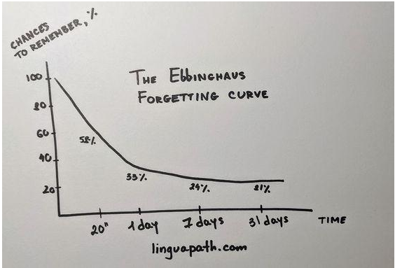

L’idea di ripetere del materiale da memorizzare usando intervalli temporali crescenti tra un ripasso e quello successivo affonda le proprie origini nel cosiddetto effetto di spaziatura. Si tratta del principio formulato da Hermann Ebbinghaus, il padre della psicologia cognitiva, che mostra su basi empiriche come la distribuzione temporale della ripetizione (vale a dire quante volte e per quanto tempo è necessario ripetere un’informazione per trasferirla alla memoria di lungo termine) sia in grado di contrastare l’inesorabile affievolimento dei ricordi. Ebbinghaus condusse un esperimento nel corso del quale stilò una lista di 2.300 sillabe prive di senso (composte dalla combinazione casuale di 3 lettere secondo uno schema consonante-vocale-consonante) e misurò a più riprese la propria capacità di richiamo dopo aver cercato di memorizzarla. Per ottenere dei risultati statisticamente plausibili, ripetè più volte l’esperimento a distanza di qualche anno dal primo tentativo. A prescindere dal numero di repliche, notò che i risultati erano tra loro abbastanza simili: un’ora dopo il tentativo di memorizzare un insieme di sillabe, ne aveva dimenticato più della metà. Un giorno dopo, ne aveva dimenticato un ulteriore 10% e un mese dopo un 14%. Superata questa soglia, il ritmo dell’oblio rallentava progressivamente e le sillabe che riusciva a ricordare si erano in qualche modo stabilizzate consolidandosi nella memoria di lungo termine. Riportando questi risultati su un grafico, lo psicologo ottenne la famosa curva dell’oblio che segue un andamento esponenziale: un fatto è velocemente dimenticato nelle prime ore e poi tende a decadere più lentamente.
